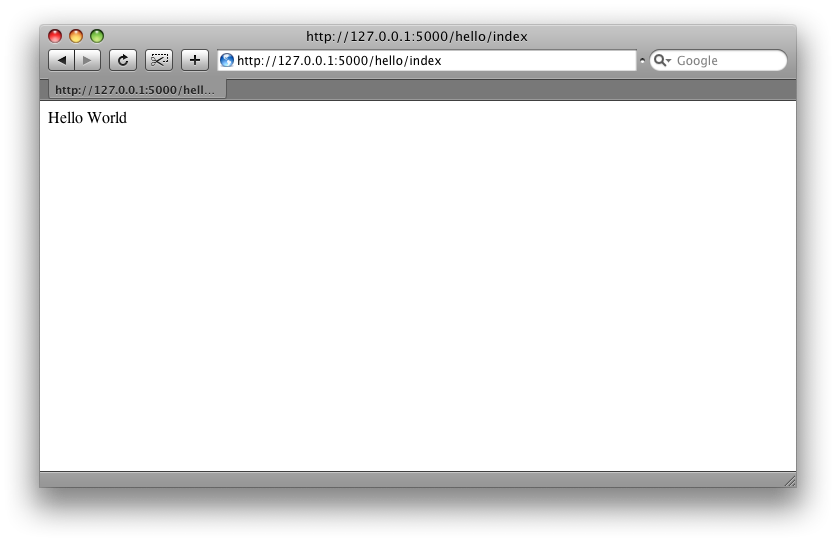
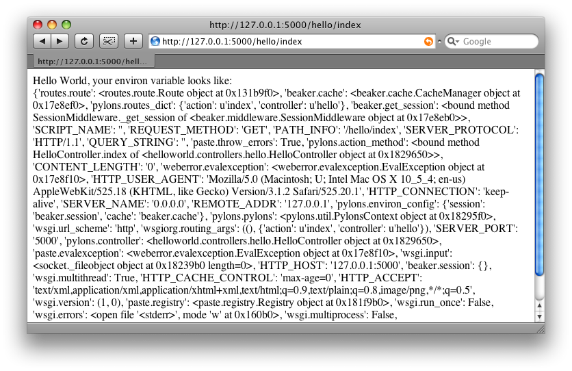

快速入门¶
译者：alswl
这章内容打算告诉你如何最简安装和运行 Pylons，并介绍一下工程概况。 整个过程中会提供一些链接来鼓励用户自行探索 Pylons 的各个方面。
安装需求¶
- Python 2.4 以上（包括2.4，但是目前还不支持 Python 3）
安装¶
为了避免和系统自带的 Python 库混淆，Pylons 提供了一个初始化脚本来配置一个「虚拟」的 Python 环境。Pylons 一会就会被安装在这个虚拟环境中。
By the Way
virtualenv 是用来创建独立 Python 环境的工具。它可以避免在使用 easy_install 时候将一大堆包安装到系统级 Python 环境中。
它的另一个优点是不需要管理员权限，因为它将所有模块安装在用户期望的目录里。 当在虚拟空间和其他没有管理员权限的时候，它让安装 Pylons 变得可能。
下载 go-pylons.py 脚本。
运行脚本，并指定一个目录用来安装虚拟环境：
$ python go-pylons.py mydevenv
Tip
在 unix 系统上，通过 curl 我们可以将上述两步并作一步：
$ curl http://pylonshq.com/download/1.0/go-pylons.py | python - mydevenv
如果不想从系统 Python 中获取现有第三方包，使用 –no-site-packages 这个参数：
$ python go-pylons.py --no-site-packages mydevenv
go-pylons.py 比 virtualenv 稍微多一点点初始化步骤，运行
easy_install Pylons==1.0。你也可以手动获取 virtualenv.py ，然后安装
Pylons，效果是一样的。
curl -O http://bitbucket.org/ianb/virtualenv/raw/8dd7663d9811/virtualenv.py
python virtualenv.py mydevenv
mydevenv/bin/easy_install Pylons==1.0
以上操作会安装一个 virtualenv 和 Pylons。
激活虚拟环境：
$ source mydevenv/bin/activate
在 Windows 上这样激活：
> mydevenv\Scripts\activate.bat
Note
如果你获得一个错误信息：
ImportError: No module named _md5
一般是由于你的 Python 在安装时候没有 Pylons 必要的标准库。Debian 系的系统
容易遇到这个问题。请确保已经安装了 python-dev 和 python-hashlib 。
从源码安装 Pylons¶
需要使用 Mercurial 来从 Pylons 源地址获取最新开发版。 Mercurial packages 在 Windows, MacOSX 和其他操作系统都有对应的版本。
签出最新代码：
$ hg clone http://bitbucket.org/bbangert/pylons/
在 Pylons 目录中给 setuptools 指定安装版本：
$ cd pylons
$ python setup.py develop
好了，当前的 Pylons 版本已经是刚才安装目录下的了，版本变化将反映在运行的 Pylons 应用中。
创建 Pylons 项目¶
通过一下明来来创建一个名为 helloworld 的新项目：
$ paster create -t pylons helloworld
Note
Windows 用户需要参考 Windows Notes 设定 PATH ，另外他们需要使用 paster
的绝对路径（包括环境路径里面的 bin 目录）
这条命令运行时候会有提示要确认两个问题：
- 使用什么模板系统
- 是否需要使用 :term: SQLAlchemy 支持
直接按回车键则接受默认设置（Mako 模板系统，不使用 SQLAlchemy ）。
下面是生成的目录结构，里面有些链接可以提供更多信息：
- helloworld
- MANIFEST.in
- README.txt
- development.ini - Runtime Configuration
- docs
- ez_setup.py
- helloworld (See the nested helloworld directory)
- helloworld.egg-info
- setup.cfg
- setup.py - Application Setup
- test.ini
helloworld directory 目录里面大概是这样：
- helloworld
__init__.py
- config
- environment.py - Environment
- middleware.py - Middleware
- routing.py - URL Configuration
controllers - 控制器
- lib
- app_globals.py - app_globals
- base.py
- helpers.py - Helpers
model - 模型
public
templates - 模板
tests - Unit and functional testing
websetup.py - Runtime Configuration
启动应用¶
启动 Web 应用：
$ cd helloworld
$ paster serve --reload development.ini
这个命令从 development.ini 中获取服务器配置信息并运行 Pylons 应用。
Note
--reload 可以让服务器在 Python 文件或者 development.ini
改变之后自动重新加载。使用 Ctrl+c
或者其他平台类似的按键来停止服务器。
只要 development.ini 文件被指定了，这个 paster serve 命令可以在任何地方执行。 在开发过程中，一般在工程根目录下运行。
当服务器在运行时候，访问 http://127.0.0.1:5000/ 就可以看到欢迎页面了。
Hello World¶
我们将在工程中创建一个 controller 控制器来响应请求。
$ paster controller hello
打开我们创建的 helloworld/controllers/hello.py 模块。
默认创建的控制器将仅仅返回字符串 ‘Hello World’。
import logging
from pylons import request, response, session, tmpl_context as c, url
from pylons.controllers.util import abort, redirect
from helloworld.lib.base import BaseController, render
log = logging.getLogger(__name__)
class HelloController(BaseController):
def index(self):
# Return a rendered template
#return render('/hello.mako')
# or, Return a response
return 'Hello World'
在这个模块的顶部，一些通用模块已经自动被引入了。
打开 http://127.0.0.1:5000/hello/index ，我们将看到一个简短的字符串 “Hello World” （需要启动服务器）。
Tip
URL Configuration 描述了 URL 链接和响应方法之间的关系。
添加一个模板来返回一些 environ 中的信息。
首先，仿照下文在 templates 目录下创建文件 hello.mako 。
Hello World, the environ variable looks like: <br />
${request.environ}
模板中的变量 request 通常用来获取当前请求的信息。 Template globals 将列出所有模板中可用的 Pylons 变量。
接下来，按照下面代码更新 controllers/hello.py 中的 index 方法。
class HelloController(BaseController):
def index(self):
return render('/hello.mako')
刷新页面，你将看到如下图这样的信息。
